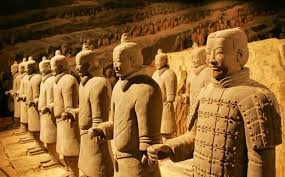
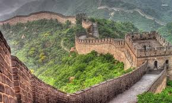
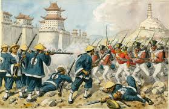
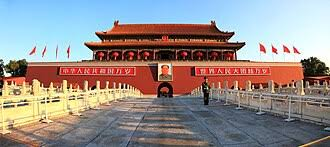

1. Thời cổ đại (2100 TCN – 221 TCN)

Thời cổ đại đánh dấu sự hình thành nền văn minh Trung Hoa. Các triều đại:
- Hạ (2100–1600 TCN): Triều đại đầu tiên, phát triển nông nghiệp và thủy lợi.
- Thương (1600–1046 TCN): Phát triển chữ viết, đồ đồng, tôn giáo thờ tổ tiên.
- Chu (1046–256 TCN): Hình thành “Thiên mệnh” và nhiều triết lý như Nho giáo, Đạo giáo.
2. Thời phong kiến (221 TCN – 1911 CN)

Trung Quốc trải qua nhiều triều đại phong kiến nổi bật: Tần, Hán, Đường, Tống, Nguyên, Minh, Thanh.
Đây là thời kỳ phát triển mạnh về văn hóa, khoa học, nghệ thuật và lãnh thổ. Một số điểm nổi bật:
- Tần (221–206 TCN): Thống nhất Trung Quốc, xây Vạn Lý Trường Thành, chuẩn hóa chữ viết và tiền tệ.
- Hán (206 TCN–220 CN): Mở rộng Con đường Tơ lụa, phát triển kinh tế và văn hóa.
- Đường (618–907): Hoàng kim văn hóa, nghệ thuật, thơ ca phát triển.
- Tống (960–1279): Kinh tế thịnh vượng, phát minh giấy in, súng nạp, hàng hải phát triển.
- Nguyên (1271–1368): Mông Cổ thống trị, mở rộng giao thương quốc tế.
- Minh (1368–1644): Tái xây Vạn Lý Trường Thành, thủy quân hùng mạnh.
- Thanh (1644–1911): Triều đại cuối cùng, đối mặt nhiều khủng hoảng với phương Tây.
Minh chứng còn lại: Vạn Lý Trường Thành, Tử Cấm Thành, nhiều di tích văn hóa và nghệ thuật.
3. Thời cận đại (1912 – 1949)

Thời cận đại chứng kiến sự sụp đổ triều đại phong kiến và ảnh hưởng mạnh từ phương Tây. Các sự kiện quan trọng:
- 1912: Thành lập Trung Hoa Dân Quốc, chấm dứt phong kiến.
- Chiến tranh thuốc phiện (1840–1860): Trung Quốc bị phương Tây xâm lược.
- Phong trào Nghĩa Hòa Đoàn (1900) chống ngoại bang.
- Chiến tranh nội bộ và xung đột quân phiệt diễn ra khắp đất nước.
4. Thời hiện đại (1949 – nay)

Sau năm 1949, Cộng hòa Nhân dân Trung Hoa được thành lập. Một số cột mốc:
- 1949: Mao Trạch Đông thành lập chính quyền.
- 1978: Cải cách kinh tế, mở cửa, Trung Quốc phát triển nhanh chóng về kinh tế và công nghệ.
- Thế kỷ 21: Trung Quốc trở thành cường quốc toàn cầu với ảnh hưởng lớn về kinh tế, khoa học, văn hóa.
Minh chứng hiện đại: Quảng trường Thiên An Môn, các thành phố lớn như Bắc Kinh, Thượng Hải, Thâm Quyến.